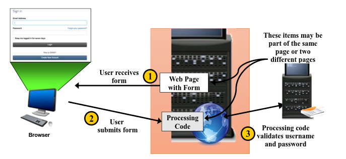

Forms-Based Authentication
Forms-based authentication is increasingly common on modern sites. This occurs when the developer has chosen to use the application to handle authentication instead of relying on the server as the previous methods did
Forms-based logins are made of multiple pieces•
Login form: This is the web form that accepts the username and password
◇ May be on a separate page or part of regular pages
•
Processing page: This page processes the authentication attempt. It may be part of the same page or a separate page entirely
◇ Processing code can be either client-side or server-side code
◇ Code can be part of the same page or a separate page on the server
•
Resources that require authentication ◇ Commonly ignored by developers
◇ Testers should attempt to access the resources directly
Forms-Based Authentication Process1. A client requests a page.
2. The server responds with a page that includes a form (HTML, Flash, Java applet, or other form type).
3. The user fills out the form.
4. The browser submits the page to the application, including the information from the user.
5. This response is processed by the application.
6. Either an error page or the resource requested is returned to the client.
Attacker's Perspective of Forms-Based Authentication• Account lockout typically doesn't exist
• Check for injection vulnerabilities
◇ SQL Injection
◇ XSS to redirect users
• Capturing the authentication token
◇ Session
◇ Cookie
◇ …
• The credentials can be not encrypted, as we can check in the
example in the subchapter